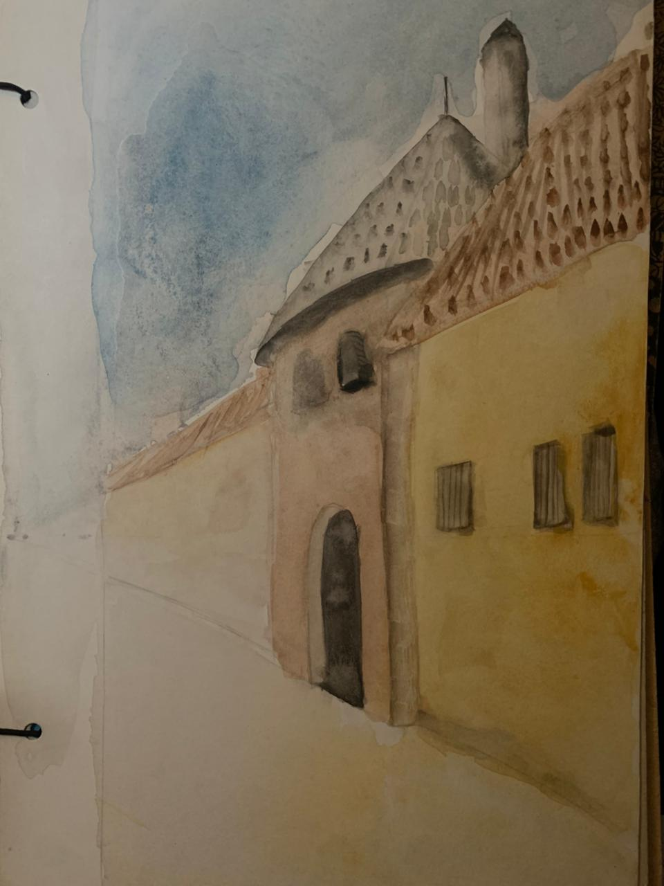
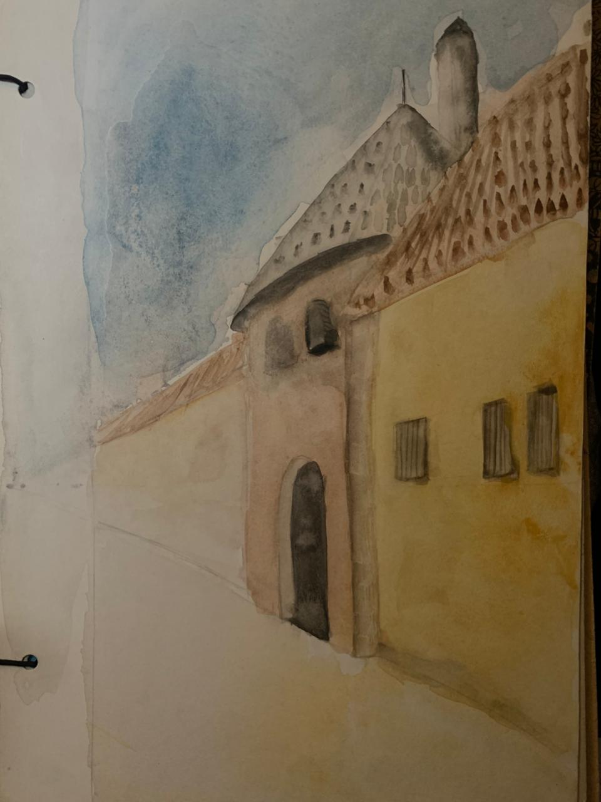
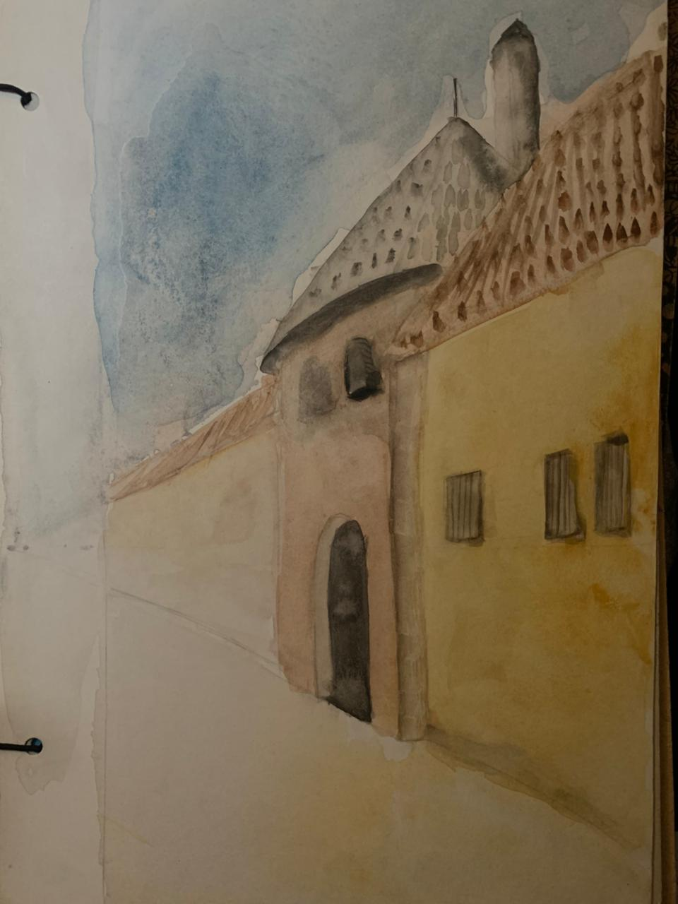

Antes del plano, el dibujo.
Desde sus años de formación, el dibujo fue el inicio de cada espacio imaginado.

 

Desde sus años de formación, el dibujo fue el inicio de cada espacio imaginado.

Estar Intimo
Tipo de Proyecto: Residencial / Interior
Superficie: 40m2
Ubicación: Hotel Asturias - CASACOR Bolivia
Año: 2022
Tiempo de ejecución: 5 Semanas

- Junio 2021 -
Churrasquera Flia. AC